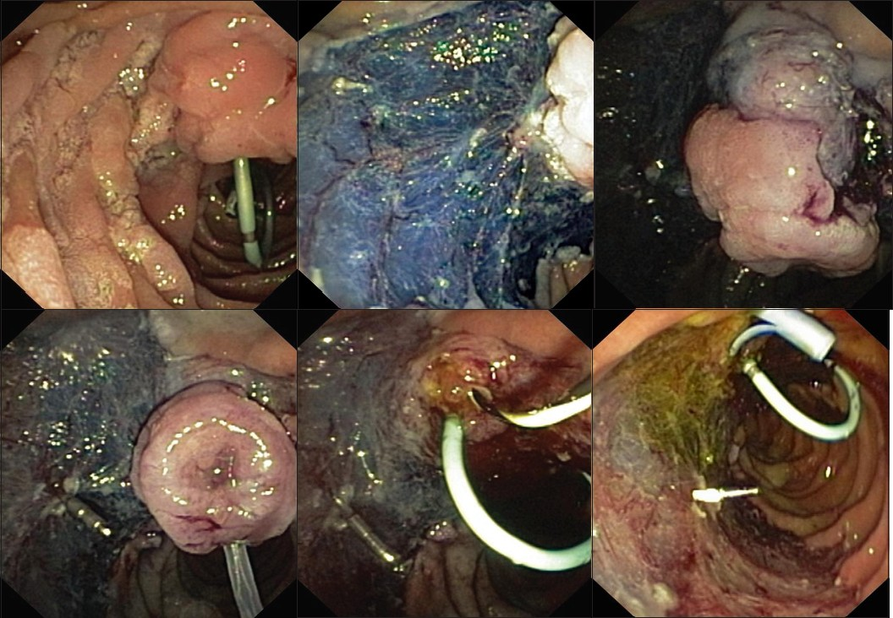

|

 |
| REVIEW ARTICLE |
|
| Year : 2012 | Volume
: 3
| Issue : 5 | Page : 65-67 |
|
Endoscopic ampullectomy
Michael Bourke
Department of Gastroenterology, Westmead Hospital, Westmead, Australia
| Date of Web Publication | 13-Apr-2012 |
Correspondence Address:
Michael Bourke
Director of Gastrointestinal Endoscopy, Westmead Hospital, 106a/151155 Hawkesbury Road, Westmead 2145
Australia
DOI: 10.4103/0976-5042.95036
Endoscopic ampullectomy offers a minimally invasive method of effectively treating non-invasive neoplasms of the ampulla of Vater and surrounding peri-ampullary region with high success and relative safety. These lesions would otherwise require surgical intervention, including pancreatico-duodenectomy. However, major complications may occur and a careful assessment of the patients comorbidities and their ability to tolerate adverse events needs to be factored into the treatment decision. Careful staging, often multi-modality is required, particularly for extensive lesions. Complete en-bloc excision of the entire neoplasm should be the goal with conventional papillary adenomas. Large lesions with extra-papillary extension currently require extended piecemeal excision, however with meticulous technique, recurrence is uncommon in longterm follow up. Keywords: Endoscopic ampullectomy, papillary adenoma; pancreatico-duodenectomy
How to cite this article:
Bourke M. Endoscopic ampullectomy. J Dig Endosc 2012;3:65-7 |
| Introduction | |  |
Endoscopic ampullectomy offers a minimally invasive method of effectively treating mucosal (and sometimes superficial submucosal) lesions of the ampulla of Vater and surrounding peri-ampullary region with high success and relative safety any. [1] These lesions would otherwise require surgical intervention, including pancreatico-duodenectomy with it's attendant mortality and morbidity risks and costs.
| Lesion Assessment and Staging | | |
Small, obviously benign, less than 20 mm adenomas may be removed without extensive work up, provided the endoscopic retrograde cholangio-pancreatography (ERCP) at the time of resection does not show evidence for significant intraductal extension (IDE). Complete multi-modality tumour staging is essential before endoscopic resection in more substantial lesions. This should include endoscopic appearance, histology, endoscopic ultrasound (EUS), magnetic resonance cholangio-pancreatography (MRCP) and endoscopic retrograde cholangio-pancreatography (ERCP) at the time of planned ampullectomy. These modalities are used to define the type and extent of the lesion, in particular assessing for evidence of submucosal invasion or lymph node metastasis and the degree of IDE if any. In my view MRCP is the generally the most informative non-invasive modality for assessing the extent of IDE and it may also inform on the presence of pancreas divisum, thus avoiding the frustration of trying to find a small ventral orifice post ampullectomy. [2]
Endoscopic appearances are less reliable in predicting deep invasion than in other mucosal sites, probably reflecting the absence of large scale systematic study including enhanced imaging techniques given the comparative infrequency of the problem and the comparatively limited utility of current duodenoscopic imaging technology. [2] Most ampullary lesions are adenomas but occasionally submucosal lesions are encountered including carcinoid tumours and gangliocytic paraganglioma. Routine biopsies of the lesion should be obtained to define the histology and degree of dysplasia, however care should be taken to avoid sampling in close proximity to the pancreatic orifice which may lead to pancreatitis.
| Endoscopic Resection Technique | | |
Complete en-bloc excision of the entire neoplasm should be the goal with conventional papillary adenomas [Figure 1]a - f. To this end complete papillectomy to the plane of the duodenal wall should always be considered to minimise recurrence due to small IDE within the papilla. [3] For lesions with extrapapillary extension the goal should be to remove the lesion in as few pieces as safely possible and again the papilla itself should be excised as one. En-bloc resection has many advantages including more accurate histological assessment and negligible recurrence. |  | Figure 1a: Large laterally spreading papillary adenoma occupying more than 50% of the circumference
Figure 1b: Endoscopic resection of the posterior wall component by chromogelofusine technique
Figure 1c: The papillary component of the adenoma is now isolated after circumferential resection
Figure 1d: Enbloc papillectomy is performed
Figure 1e: The pancreatic stent has been placed to prevent post papillectomy pancreatitis. A biliary stent will follow in case of severe post procedural bleeding to prevent complications of haemobilia and to help localise the papilla endoscopically
Figure 1f: Final result as seen from above
Click here to view |
We recommend the use of a thin wire snare of approximately 0.3 mm diameter. Snare size should be closely adapted to the size of the target. The thin wire maximizes current density for swift transection of the papillary mechanism, minimizing the risk of "stalling" and limiting dispersion of the energy which may cause unnecessary injury to the pancreatic orifice, increasing the risk of a late stenosis. Oval or hexagonal snares of approximately 15 mm × 30 mm are ideal for most conventional adenomas. The close approximation of lesion and snare size affords precision in tissue capture, ensuring an R0 excision where this is technically feasible.
Microprocessor-controlled electrosurgical generators capable of delivering alternating cycles of high frequency short pulse cutting with more prolonged coagulation current are required. These generators sense tissue impedance via signals from the return electrode and adjust power output accordingly. As the tissue to be transected usually includes the muscle of the papillary mechanism which may be resistant to division, these generators minimize the likelihood of "stalling".
ERCP is important for staging and should be undertaken prior to endoscopic ampullectomy. To resect the papilla the snare should be opened in a line corresponding to the long axis of the papillary mound. Ideally, the snare tip is anchored above the apex of the papilla and the snare carefully opened and drawn down over the papilla, whilst the tip maintains its contact where it was impacted above. This has been termed the fulcrum technique. Once the snare has been placed over the papilla in this manner, it is closed maximally, as tight as possible without losing contact with the point of impaction above. The entrapped papilla should be independently mobile relative to the duodenal wall behind. The snare is closed maximally and the papilla divided by continuous application of current (as described above). This takes approximately 2 to 3 times (sometimes disconcertingly) as long as a polyp stalk of comparable size. If laterally spreading components are present, these will require submucosal injection before snare excision and may be best removed before the papilla is excised. [3] The PD should be accessed and stented as the first priority after the papillectomy. Level 1 evidence confirms that PD stent placement greatly reduces the risk of pancreatitis. [4] After an initial hiatus post ampullectomy bleeding of varying intensity (mild venous oozing or major arterial bleeding) often ensues. This will often obscure the PD orifice and frustrate attempts at PD cannulation. Intra-procedural bleeding is common and can hamper visualisation which may be a particular challenge for stent placement. The endoscopist should have available, and be familiar with a range of haemostatic devices including injectors, haemostatic clips and coagulating forceps. Major bleeding is often best treated using coagulating forceps, but several therapeutic modalities may be required.
| Complications and Management | | |
The most serious complications are perforation, delayed bleeding and pancreatitis. [1],[2],[3] Identification of high risk patients, early recognition of complications and aggressive management ameliorates their frequency and severity. Patients who will tolerate a major complication poorly, such as severe post procedural bleeding (which is the most frequent and unpredictably severe) need to be carefully screened and appropriately consented. The duodenum is highly vascular and is at high risk of both early and delayed bleeding. [5] If major bleeding is anticipated then temporary biliary stenting is helpful to prevent obstructing haemobilia and localize the ampullectomy bed (and the likely bleeding site) amidst the brisk bleeding at the time of subsequent urgent endoscopy.
A careful inspection of the resection defect must always be undertaken to assess for areas of deep resection. Endoscopic features are less reliable at determining deep resection than in other sites and so a high clinical index of suspicion must be maintained during post-procedural clinical assessment. Ongoing pain should prompt radiological assessment (CT scan is more sensitive than plain X-rays) and, if required, surgical review.
| Conclusion | | |
Endoscopic ampullectomy is a safe and effective therapy for papillary adenomas, laterally spreading ampullary lesions and some carefully selected submucosal ampullary lesions. Even in experienced hands there is a substantial incidence of moderate to severe complications that the endoscopist must be prepared to identify and manage.
| References | | |
| 1. | Irani S, Arai A, Ayub K, Biehl T, Brandabur JJ, Dorer R, et al. Papillectomy for ampullary neoplasm: Results of a single referral center over a 10-year period. Gastrointest Endosc 2009;70:923-32. 
[PUBMED] [FULLTEXT] |
| 2. | Bassam M, Bourke MJ. Endoscopic Ampullectomy: A practical guide. J Interv Gastroenterol 2011. [In press].
|
| 3. | Hopper AD, Bourke MJ, Williams SJ, Swan MP. Giant laterally spreading tumors of the papilla: Endoscopic features, resection technique, and outcome (with videos). Gastrointest Endosc 2010;71:967-75.
[PUBMED] [FULLTEXT] |
| 4. | Harewood GC, Pochron NL, Gostout CJ. Prospective, randomized, controlled trial of prophylactic pancreatic stent placement for endoscopic snare excision of the duodenal ampulla. Gastrointest Endosc 2005;62:367-70.
[PUBMED] [FULLTEXT] |
| 5. | Fanning SB, Bourke MJ, Williams SJ, Chung A, Kariyawasam VC. Giant laterally spreading tumors of the duodenum: Endoscopic resection outcomes, limitations, and caveats. Gastrointest Endosc 2012;75:805-12.
[PUBMED] [FULLTEXT] |
[Figure 1]
|